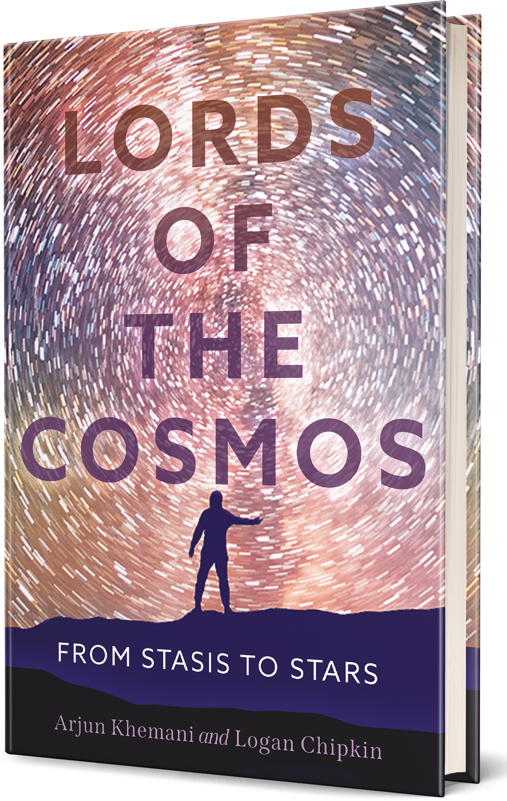
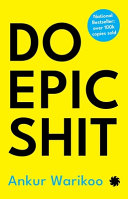

Lords of the Cosmos: From Stasis to Stars
Arjun Khemani & Logan Chipkin
Science, stories, and a few detours. A selection from my reading archive.
Physics, life, and our place in it.

Arjun Khemani & Logan Chipkin
Sara Imari Walker
Carl Sagan
Stephen Hawking
Richard P. Feynman
Richard P. Feynman
Other lives, other worlds.
Robert A. Heinlein
Bonnie Garmus
Khaled Hosseini
John Green
Paulo Coelho
Paulo Coelho
People, in their own words and others’.
Indra Nooyi
Steve Jobs
Will Smith with Mark Manson
David Goggins
Phil Knight
Chris Hadfield
Michelle Obama
George Beahm
Mitch Albom
Work, money, habits, and everything around them.
Shwetabh Gangwar
Dale Carnegie
Peter Thiel with Blake Masters
Radhika Gupta
Kathryn & Ross Petras
Adam Grant
Morgan Housel
Darren Hardy
Bob Miglani & Rehan Yar Khan
Oprah Winfrey
Héctor García & Francesc Miralles
Robert T. Kiyosaki

Ankur Warikoo